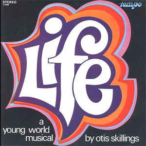

1738 愛使我們合一 The Bond of Love
|
|
愛使我們合一 |
|
1. We are one in the bond of love,
Weare one in the bond of love;
Wehave joined our spirit with Spirit of God,
Weare one in the bond of love.
2. Let us sing now, ev’ryone.
Let us feel His love begun;
Let us join our hands that the world will know
Weare one in the bond of love. |
1)
主的愛使我們合一，主的愛使我們合一；
主的聖靈充滿在我們的心裡，主的愛使我們合一。
2)
讓我們同聲歡唱，主的愛彼此分享；
讓我們攜手同心向世人證明，主的愛使我們合一。 |

http://www.sooopu.com/sooopuupload/zanmeishi/askm4cg3r4h.png
|
|
|
http://www.hymncompanions.org/Dec/30/stream.php
主的愛使我們合一，
主的愛使我們合一；
主的聖靈充滿在我們的心�堙A
主的愛使我們合一。
讓我們同聲歡唱，
主的愛彼此分享；
讓我們攜手同心向世人證明，
主的愛使我們合一。
 (請點耳機收聽)
(請點耳機收聽)
施杰林（Otis Skillings, 1935 - ）出身在美國俄亥俄州牧師的家庭。 當年牧師是專業者，他們有自己的生活方式。
他的父親認為牧師的責職始於其家庭。施杰林五歲的那一年，有一晚母親有事外出，他父親在廚房的餐桌上向他傳說基督是每個人的救主。
他隨父親跪在椅旁接受主。數月後，他和一群人在河畔受浸，因為他們的教會沒有浸池的設備。

受浸後，教會的肢體們鼓勵他靈命成長，大家且在奮興會上追求心靈更新。如此，施杰林得激勵全心向主。
每年有五千人自各地教會來此參加為期兩週的營會，這是交誼和交通的良機。
這營會又擴展了施杰林的音樂視野。 司琴能奏複雜的曲調，領唱者用伸縮喇叭伸向高空帶領會眾，讚美歌聲震天，令他驚訝不已
。施杰林的父母諳音樂，但沒有受過訓練，他的父親在男聲四重唱中擔任男低音，他的母親不會看琴譜，但她能彈降b調的聖詩。
他在四年級時，在班上，老師教了一些鋼琴簡奏；六年級時，在學校的樂隊吹伸縮喇叭；初中時參加了合唱團，又學了一年鋼琴。
當時沒有人會預測到他的未來會是一位鋼琴演奏家和作曲家。
在他高中二年級的那一年，有一天，他接到當地「青年歸主運動」負責人的電話，告訴他，他們要舉辦一個青年才藝比賽，問他可願參加？
他告訴他樂意參加鋼琴比賽，演奏「聖城」（The Holy City）。 一個月後，當他走入青年歸主運動的會場，嚇得他目瞪口呆，有一千多個年青人在場。
牧師詼諧生動的講台，深獲年輕人的歡心。自此以後，他就參加青年歸主運動的各項活動。
高中畢業後，他進聖經學院就讀，並在當地青年歸主運動任職。 一年後，他去加州聖地牙哥為青年歸主運動工作有九年之久。
施杰林所作的詩歌多數是簡單、淺顯、易唱，使會眾能即刻詠唱。
這首詩歌作于1971年，經常在團契的聚會和佈道會時選唱。 廿五年後，施杰林赴菲律賓作短期宣教，有一群神學生在機場迎迓，當他步出機艙，看到走道上懸著「愛使我們合一」的標誌。
在他走入人群時，大家齊唱「主的愛使我們合一」，先用英文，繼用菲語，令他感動不已 。
中英文聖詩集參考
英文歌名 The
Bond of Love
教會聖詩 442
新聖詩 239
歡欣讚美 423
https://www.jgospel.net/c/2/112940/279/3986/%E5%82%B3%E7%B5%B1%E8%81%96%E8%A9%A9%E7%B3%BB%E5%88%97-%E6%84%9B%E4%BD%BF%E6%88%91%E5%80%91%E5%90%88%E4%B8%80.aspx
出身在美國俄亥俄州牧師的家庭。 當年牧師是專業者，他們有自己的生活方式。
他的父親認為牧師的責職始於其家庭。施傑林五歲的那一年，有一晚母親有事外出，他父親在廚房的餐桌上向他傳說基督是每個人的救主。
他隨父親跪在椅旁接受主。數月後，他和一群人在河畔受浸，因為他們的教會沒有浸池的設備。
他父親的教友們鼓勵他靈命的成長，他們在奮興會上追求心靈更新。施傑林在這激勵下全心向主。 每年有五千人自各地教會來此參加為期兩週的營會，這是交誼和交通的良機。
這營會擴展了施傑林的音樂視野。司琴能奏難奏曲調，領唱者用伸縮喇叭伸向高空帶領會眾，讚美歌聲震天，令他驚訝不已。施傑林的父母諳音樂，但沒有受過訓練，他的父親在男聲四重唱中擔任男低音，他的母親不會看琴譜，但她能彈降b調的聖詩。
他在四年級時，在班上，老師教了一些鋼琴簡奏；六年級時，在學校的樂隊吹伸縮喇叭；初中時參加了合唱團，又學了一年鋼琴。
當時沒有人會預測到他的未來會是一位鋼琴演奏家和作曲家。
在他高中二年級的那一年，有一天，他接到當地「青年歸主運動」負責人的電話，告訴他，他們要舉辦一個青年才藝比賽，問他可願參加？
他告訴他樂意參加鋼琴比賽，演奏「聖城」（The Holy City）。 一個月後，當他走入青年歸主運動的會場，看到有一千多個年青人在場，嚇得他目瞪口呆。
當時牧師詼諧生動的講台，深獲年輕人的歡心。自此以後，他就參加青年歸主運動的各項活動。高中畢業後，他進聖經學院就讀，並在當地青年歸主運動任職。
一年後，他去加州聖地牙哥為青年歸主運動工作有九年之久。
施傑林所作的詩歌多數是簡單淺顯易唱，使會眾能即刻詠唱。這首詩歌作於1971年，經常在團契的聚會和佈道會時選唱。
廿五年後，施傑林赴菲律賓作短期宣教，有一群神學生在機場迎迓，當他步出機艙，看到走道上懸著「愛使我們合一」的標誌。
在他走入人群時，大家齊唱「主的愛使我們合一」，先用英文，繼用菲語，令他感動不已

https://www.findagrave.com/memorial/151449241/otis-skillings

ROCKFORD-- Otis Skillings, 69, of Rockford died at 2:05 a.m. Tuesday Oct. 12,
2004, in his home. Born July 27, 1935, in Hamilton, Ohio, just north of
Cincinnati, the son of Anson and Ruth (Snyder) Dickinson Skillings. Otis married
Mervyl Williams in Mason City, Iowa, April 16, 1955. His father was a Pilgrim
Holiness minister, and for years Otis played the piano in his father's church.
They had no choir, so he wasn't involved in choral music until the 11th grade.
It was then he got an invitation from the director of Dayton Youth for Christ to
come and play piano for a special meeting. That invitation proved to be a
turning point in Otis' life. Otis has written thousands of songs over the
decades. A number of them are still used in churches around the world. He became
best known for his pioneering of youth musicals "Life," "Love" and many more.
One song has made a special place for itself in hymnology of the church. While
so many songs have come and gone, "The Bond of Love" still expresses our oneness
in Christ in a say that is unique, compelling and timeless. As Otis travled the
world as a music missionary, he often met by voices singing "The Bond of Love'
in their native tongue. Otis had a wide vareity of ministries; writer and
arranger for The Spurrlows, The Regeneration, The Renaissance, Youth for Christ,
Skyline Wesleyan Church, First Evangelical Free Church, Splendor and Majesty,
Temple Baptist and Riverside Community Church. Most recently he was working with
Barnabas International. Otis is survived by his wife, Mervyl Skillings; daughter
and family, Sandra MacKay and husband, mark, along with their children, Melissa,
Andy, Bethany and Jonathan; daughter and family, Cindy McKelvey and husband,
Jim, along with their children, Erin and Jason; mother, Ruth Skillings; sister,
Caroyn Williams along with ther daughter Sheri; nephew and family, Todd and
Traci Williams, along with their children, Joshua and Jacob.
Visitation from 4 to 7 p.m. Friday, Oct. 15, in Temple Baptist Church, 3215 E.
State St. Private burial in Scandinavian Cemetery. Memorial service at 1 p.m.
Saturday, Oct 16, in First Evangelical Free Church, 2223 N. Mulford Road, with
the Rev. Dr. John More, the Rev. Dr. Lareau Lindquist, the Rev. Dr. William
Richard Kerr Sr., the Reve Dr. James Parrish and the Rev. Orval Butcher
officiating. In lieu of flowers, a memorial will be established in Otis
Skillings' name. Arrangements by Fred C. Olson Funeral Chapels Ltd., North
Chapel, 2811 N. Main St.
Otis Skillings
The late Otis Skillings was a widely respected musician, arranger, composer,
orchestra conductor, concert pianist, workshop clinician, and lecturer. He first
came to prominence in the early 1970's with his trend-setting musicals LIFE and
LOVE. Among his original songs are favorites like The Bond of Love and Lord, We
Praise You. His music has been featured at the world conventions of many
denominations and his songs appear in many leading hymnals. Otis' work has been
performed in the White House and at the Democratic National Conventions. He won
numerous musical honors on city, state, and national levels. Prior to his death
in 2004, he directed the Sunday morning music and worship at Temple Baptist
Church in Rockford, Illinois.
http://dianaleaghmatthews.com/we-are-one-in-the-bond-of-love/#.YMCABPkzbIU
June 24, 2018Leave a comment
We are one in the bond of love is another popular chorus that originated in
the early 1970s. The song is known both as We Are One in the Bond of Love and
Bond of Love.
The text is based on Colossians 2:2, Colossians 3:14, Ephesians 4:1-3 and
John 17:23.
The chorus was written by Otis Skillings in 1971. The song was published by
Lillenas Publishing Company.
Otis Skillings was born on June 27, 1935 in Ohio. He was the son of Anson and
Ruth Snyder Dickinson Skillings. He played the piano in his father’s church.

Otis Skillings
On April 16, 1955, he married Mervyl Williams in Mason City, Iowa.
His life was changed when he was asked to play for the Dayton Youth for
Christ. He would go on to write thousands of songs over the course of his life.
Skillings worked in a variety of ministries over the years and traveled the
world as a music missionary.
He died on October 12, 2004.
The obituary of Mr. Skillings says, “While so many songs have come and gone,
“The Bond of Love” still expresses our oneness in Christ in a say that is
unique, compelling and timeless.” He was often met by individuals singing The
Bond of Love in their native tongue.